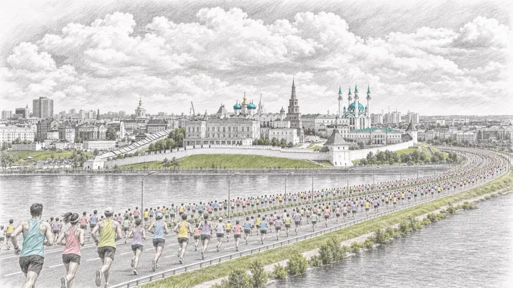
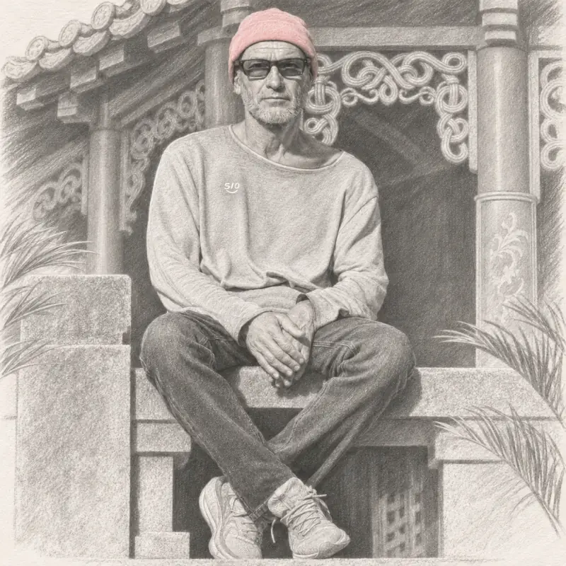

Ильдар Хасанов
Казанский марафон, 2025
- Было
- 3:07:40
- Стало
- 2:58:15
Впервые быстрее трёх часов.

Авторский план Юрия Строфилова и платформа S10.run с живыми тренерами.
До старта 163 дня. План сейчас стоит 2 000 ₽.
Тренировки до самого старта, неделя за неделей.
Интервальные, развивающие, длительные и лёгкие пробежки — темп рассчитан под вас.
Аналитика после пробежки: что получилось и где запас.
Если задание не получилось, следующие тренировки можно пересчитать.
Задания, напоминания и отчёты приходят в Телеграм.
Юрий Строфилов лично отвечает на вопросы.
Техническую помощь оказывают люди, а не автоответчик.
Личный рекорд на марафоне — 2:36 в 59 лет.

Примеры: имена и результаты условные.
Казанский марафон, 2025
Впервые быстрее трёх часов.
Казанский марафон, 2025
Казанский марафон, 2025
Готовый план на 24 недели от Юрия Строфилова. Выберите цель — 3:00, 3:30 или 4:00, — и Solo заполнит ваш календарь S10 тренировками в ваших темпах.
2 мая 2027 · Казань · 42,2 км
Старт отмечен: 2 мая, Казань, цель на ваш выбор.
Каждую неделю две работы и длительная.
Каждая тренировка в ваших темпах и километрах.
Календарь заполнен до самого старта.
Открыли Solo — и сразу видно, что бежать сегодня, какая это неделя плана и сколько дней до Казани.
Две беговые недели или сразу весь план до 2 мая, одним нажатием.
T5, T10, T21 и T42 считаются от вашей цели. Можно задать и свои.
Рядом с каждым заданием — что вы пробежали на самом деле, по трекам из дневника.
Насколько реальна цель к 2 мая — по вашим тренировкам за последние 6 недель. Меняется после каждой.
Ключевые работы, объём, длительные и регулярность за 6 недель.
Начинаете, когда подготовка уже идёт? Первые две недели будут легче, ключевые работы — как в плане.
Пропустили неделю или бежите быстрее задания? Solo перестроит оставшиеся недели по правилам или с ИИ.
За 2 недели пробежано 70% плана: объём вернётся постепенно.
1 из 6
Выбирайте по нынешней форме, а не по мечте: эта цель — если полумарафон сейчас около 1:41.
Тренер и основатель S10.run, двукратный чемпион мира по марафону в возрастных группах 55+ и 60+.
«Когда вы регулярно тратите на что-то час-полтора в день, имеет смысл делать это осознанно. Именно так добиваются результатов» — Юрий Строфилов, основатель S10.run
Аккаунт S10. План к Казани откроется сразу после входа.
Зарегистрироваться можно бесплатно. Заполнять календарь планом будет с Premium, первые 3 дня бесплатно.
Для тех, кто готовится к Казани с Solo. Первые 3 дня бесплатно.
S10 Solo заполняет календарь планом до 2 мая. Глубокий анализ тренировок, Telegram-бот и приложения для iOS и Android, челленджи каждую неделю и больше 100 подкастов.
Нет. Solo начнёт с ближайшей недели плана, а если вы пропустили больше трёх недель, первые две сделает легче.
Ключевые работы одни и те же. От цели зависят темпа, длина длительных и лёгкого бега. Цель можно сменить в любой момент.
Перед заполнением Solo спросит, сделать ли Казанский марафон главным стартом. Прежний старт останется в дневнике обычным соревнованием.
Прошедшие дни и сегодня он не трогает, а дни, где уже стоит задача, оставляет как есть. Заполнение можно отменить.
Регистрация бесплатна. Заполнение календаря — в Premium: первые 3 дня бесплатно, дальше 750 ₽ или 9 € в месяц.
Организатор пока не объявил её официально. План стоит на 2 мая 2027; если дата сдвинется, мы обновим план.